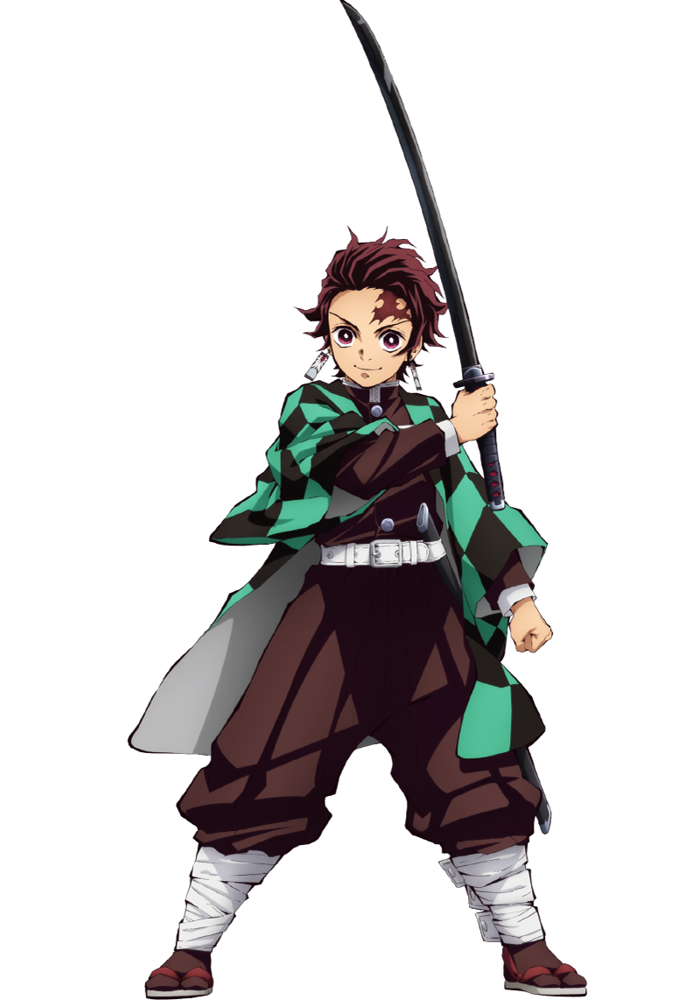
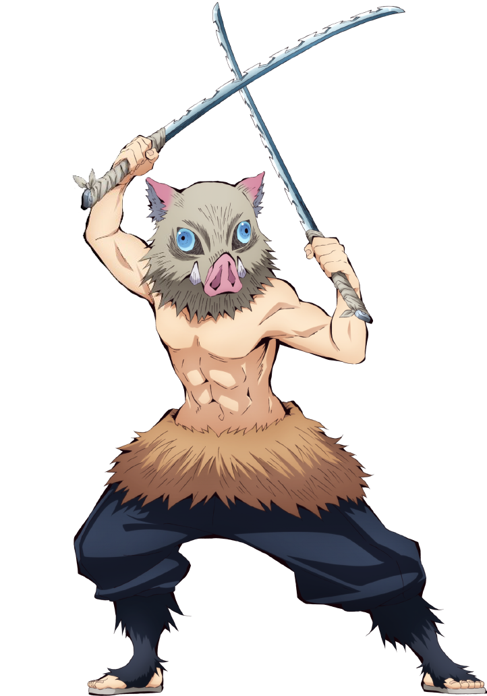

KIMETSU NO YAIBA
Kamado Tanjirou

Tanjirou là một thiếu niên có mái tóc màu đỏ tía vuốt ngược, đôi mắt đỏ đen cùng một vết sẹo lớn bên phải trán.
Cậu đeo bông tai hình chữ nhật dài với biểu tượng mặt trời cùng bộ haori đen với hoa văn gồm các mảng màu đen
và xanh lá,
cùng bộ đồng phục Thợ Săn Quỷ tiêu chuẩn.
Cậu mang theo một chiếc hộp bằng gỗ trên lưng, nơi Nezuko nghỉ ngơi vào ban ngày.
Agatsuma Zenitsu

Zenitsu là một thiếu niên có mái tóc ngắn màu vàng, với đôi mắt vàng kim cùng cặp chân mày rậm.
Cậu mặt bộ đồng phục diệt quỷ tiêu chuẩn màu đen với bộ haori màu
vàng có hoa văn nhiều hình tam giác nhỏ màu trắng.
Hashibira Inosuke

Inosuke thường được nhìn thấy với một mặt nạ heo rừng màu xám, cậu thường không mặc đồng phục của Thợ Săn Quỷ.
Khuôn mặt thật của cậu gồm mái tóc đen dài ngang vai, đôi mắt xanh lớn,
cùng với hàng mi dài. Cậu được mô tả là có khuôn mặt nữ tính đối lập hoàn toàn với cơ thể cơ bắp.
Kamado Nezuko

Nezuko có mái tóc xõa dài màu đen, được cô buộc thành búi với vài dải ruy băng.
Ban đầu cô có đôi mắt màu màu đỏ sẫm, nhưng khi thành quỷ thì mắt cô trở thành màu hồng sáng.
Nezuko cũng ngậm một ống tre trước miệng.Cô mặc một bộ kimono
màu hồng với hoa văn hình ngôi sao, obi ca rô đỏ trắng cùng một bộ haori đen bên ngoài.
Vì là quỷ, cô có thể thay đổi kích thước cơ thể.